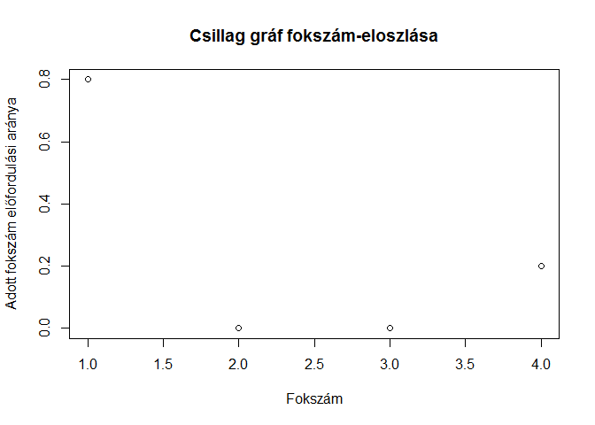
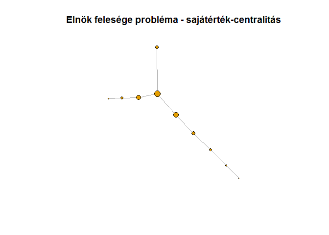
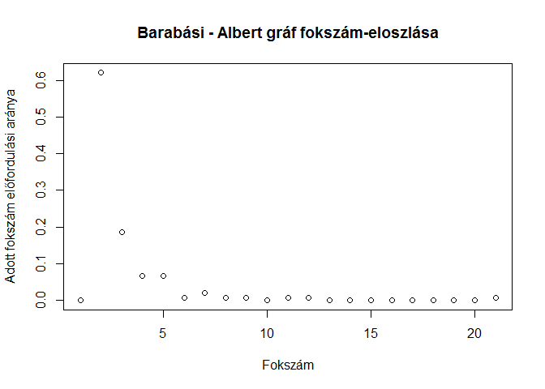

Bevezetés a hálózatelméletbe
Tajti András
Budapest 2019. 01. 25.
Miért jók a gráfok?
A “hagyományos” módszerekkel ellentétben kapcsolatok összességét lehet velük vizsgálni. Euler 1736-ban a Königsbergi hidak problémáját elemezte így; arra a kérdésre kereste a választ, hogy be lehet-e járni a várost úgy, hogy minden hídján egyszer megyünk át? 

A gráfokat nem csak ábrázolva tudjuk vizsgálni, sok tulajdonságról a summary azonnal ad információt:
summary(Koenigsberg)## IGRAPH 227bd5e UN-- 4 7 -- The seven bidges of Koenigsberg
## + attr: name (g/c), name (v/c), Euler_letter (v/c), Euler_letter
## | (e/c), name (e/c)Gráfok készítése
Egy gráfot létre tudunk hozni az élek és csúcsok hozzáadásával, de akár részgráfokkal is bővíthetjük:
graf_darabonkent <- graph_from_literal()
cat("Üres gráf összefoglaló adatai")## Üres gráf összefoglaló adataisummary(graf_darabonkent)## IGRAPH fdf28fa U--- 0 0 --graf_darabonkent <- graf_darabonkent + vertex("Első csúcs")
cat("Egy csúcsú gráf összefoglaló adatai")## Egy csúcsú gráf összefoglaló adataisummary(graf_darabonkent)## IGRAPH fdf639d UN-- 1 0 --
## + attr: name (v/c)graf_darabonkent <- graf_darabonkent + vertex("Második csúcs") + edge(1, 2)
cat("Több csúcsú gráf összefoglaló adatai")## Több csúcsú gráf összefoglaló adataisummary(graf_darabonkent)## IGRAPH fdfa817 UN-- 2 1 --
## + attr: name (v/c)Ez macerás, szerencsére gyakori alakzatokat könnyű generálni:
teljes_halozat <- graph_from_literal(A:B:C:D - A:B:C:D)
fa <- make_tree(5)
kor <- make_ring(5)
csillag <- make_star(5, mode="undirected")
becsillag <- make_star(5, mode="in")
kicsillag <- make_star(5, mode="out")
plot(teljes_halozat, main="Teljes gráf")
plot(fa, main="Fa")
plot(kor, main="Körgráf")
plot(csillag, main="Csillag gráf")
plot(kicsillag, main="Csillag gráf kifelé irányított élekkel")
plot(becsillag, main="Csillag gráf befelé irányított élekkel")
Természetesen az elemzendő hálózatokat nem érdemes így betölteni; az igraph sok adattípus értelmezésére fel van készítve - ezek közül a leghasznosabb az éllisták gráffá alakítása:
BP_metro <- data.frame(forras = c("Vörösmarty tér", "Deák Ferenc tér", "Bajcsy-Zsilinszky út", "Opera", "Oktogon", "Vörösmarty utca", "Kodály körönd", "Bajza utca", "Hősök tere", "Széchenyi fürdő",
"Déli pályaudvar", "Széll Kálmán tér", "Batthyány tér", "Kossuth Lajos tér", "Deák Ferenc tér", "Astoria", "Blaha Lujza tér", "Keleti pályaudvar", "Puskás Ferenc Stadion", "Pillangó utca",
"Újpest-Központ", "Újpest-Városkapu", "Gyöngyösi utca", "Forgách utca", "Árpád híd", "Dózsa György út", "Lehet tér", "Nyugati pályaudvar", "Arany János utca", "Deák Ferenc tér", "Ferenciek tere", "Kálvin tér", "Corvin negyed", "Klinikák", "Nagyvárad tér", "Népliget", "Ecseri út", "Pöttyös utca", "Határ út",
"Kelenföld vasútállomás", "Bikás park", "Újbuda-központ", "Móricz Zsigmond körtér", "Szent Gellért tér", "Fővám tér", "Kálvin tér", "Rákóczi tér", "II. János Pál pápa tér"),
cel = c("Deák Ferenc tér", "Bajcsy-Zsilinszky út", "Opera", "Oktogon", "Vörösmarty utca", "Kodály körönd", "Bajza utca", "Hősök tere", "Széchenyi fürdő", "Mexikói út vá.",
"Széll Kálmán tér", "Batthyány tér", "Kossuth Lajos tér", "Deák Ferenc tér", "Astoria", "Blaha Lujza tér", "Keleti pályaudvar", "Puskás Ferenc Stadion", "Pillangó utca", "Örs vezér tere",
"Újpest-Városkapu", "Gyöngyösi utca", "Forgách utca", "Árpád híd", "Dózsa György út", "Lehet tér", "Nyugati pályaudvar", "Arany János utca", "Deák Ferenc tér", "Ferenciek tere", "Kálvin tér", "Corvin negyed", "Klinikák", "Nagyvárad tér", "Népliget", "Ecseri út", "Pöttyös utca", "Határ út", "Kőbánya-Kispest",
"Bikás park", "Újbuda-központ", "Móricz Zsigmond körtér", "Szent Gellért tér", "Fővám tér", "Kálvin tér", "Rákóczi tér", "II. János Pál pápa tér", "Keleti pályaudvar"),
vonal = c(rep("M1", 10),
rep("M2", 10),
rep("M3", 19),
rep("M4", 9)))
BP_metro_graf <- graph_from_data_frame(BP_metro, directed=FALSE)
plot(BP_metro_graf,
main="Budapest metróhálózata gráfként",
vertex.size=.2,
vertex.label.cex=.7,
edge.color=c("yellow", "red", "blue", "green")[as.factor(E(BP_metro_graf)$vonal)])
A hálózatok struktúrája
A csúcsok és élek száma, de még az irányítottságuk sem árul el sokat a gráf struktúrájáról.
Fokszám-eloszlás
Sokat segít a csúcsok fokszámának eloszlása abban, hogy képet alkothassunk egy nagy hálózatról:
plot(degree.distribution(teljes_halozat)[-1],
main="Teljes gráf fokszám-eloszlása",
ylab="Adott fokszám előfordulási aránya",
xlab="Fokszám")plot(degree.distribution(kor)[-1],
main="Körgráf fokszám-eloszlása",
ylab="Adott fokszám előfordulási aránya",
xlab="Fokszám")plot(degree.distribution(csillag)[-1],
main="Csillag gráf fokszám-eloszlása",
ylab="Adott fokszám előfordulási aránya",
xlab="Fokszám")
plot(degree.distribution(fa)[-1],
main="Fa fokszám-eloszlása",
ylab="Adott fokszám előfordulási aránya",
xlab="Fokszám")plot(degree.distribution(BP_metro_graf)[-1],
main="BP metróhálózatának fokszám-eloszlása",
ylab="Adott fokszám előfordulási aránya",
xlab="Fokszám")Átmérő
Az átmérő a gráfon megtalálható leghosszabb legrövidebb út. Mivel az út függ attól, hogy a hálózat irányított vagy irányítatlan, az átmérő hossza is függ ettől:
- A létrehozott fa gráf átmérője 2,
- az irányítatlan körgráfé pedig 2.
- Az irányítatlan csillag gráfnak 2,
- míg az irányítottnak csak 1.
Centralitás
Érdemes megvizsgálni, melyek a fontos csúcsok egy hálózatban, erre sok lehetőség van:
Annál fontosabbnak tekintünk egy csúcsot, minél több kapcsolattal rendelkezik,
minél több csúcsot köt össze,
minél fontosabb csúcsokhoz csatlakozik,
minél nagyobb eséllyel kerül elő véletlenszerűen.
fokszam_centralitas <- centr_degree(BP_metro_graf)
plot(BP_metro_graf,
main="Budapest metróhálózata fokszám szerinti fontosság alapján",
vertex.size=fokszam_centralitas$res,
vertex.label=NA)
tolmacs_problema <- make_star(5, mode="undirected") + make_star(5, mode="undirected") + edge(2, 10)
plot(tolmacs_problema,
main="Tolmács probléma fokszám szerinti fontosság alapján",
vertex.size=centr_degree(tolmacs_problema)$res,
vertex.label=NA)
A tolmács-probléma azt a helyzetet írja le, mikor az információ egy adott emberen keresztül áramlik két csoport közt, így ő tudja szűrni, alakítani annak tartalmát. Erre a köztesség, vagy betweenness-centralitás a megfelelő mérőszám:
koztesseg <- centr_betw(tolmacs_problema)
plot(tolmacs_problema,
main="Tolmács probléma köztesség szerinti fontosság alapján",
vertex.size=koztesseg$res,
vertex.label=NA)
Azonban ez sem mindn esetben ideális, erre az Elnök feleségének példája hozható: az ő esetében sem a kapcsolatok száma, sem a csak rajta átáramló információ mennyisége nem kiugró a környezetéhez képest, azonban az egyik legfontosabb döntéshozóra van jelentős hatása. Tehát minden egyes személy fontossága a hálózatban függ attól, milyen fontos személyekhez kapcsolódik - ezt a sajátérték-centralitás mutatja meg:
elnok_felesege <- make_star(4, mode="undirected") +
vertex(5:10) + path(3,5,6) + path(4,7,8,9,10)
sajatertek_centralitas <- centr_eigen(elnok_felesege)
koztesseg_centralitas <- centr_betw(elnok_felesege)
plot(elnok_felesege,
main="Elnök felesége probléma - köztesség-centralitás",
vertex.size=koztesseg_centralitas$res/5,
vertex.label=NA)
plot(elnok_felesege,
main="Elnök felesége probléma - sajátérték-centralitás",
vertex.size=sajatertek_centralitas$vector*10,
vertex.label=NA)
Döntési folyamatokat ezzel a módszerrel jól lehet elemezni, azonban ha azt szeretnénk tudni, hogy egy kérdésre a hálózatban ki tudja a legnagyobb eséllyel a választ, a PageRank algoritmus ad választ:
elnok_felesege_pg <- page_rank(elnok_felesege)
plot(elnok_felesege,
main="Elnök felesége probléma - PageRank score",
vertex.size=elnok_felesege_pg$vector*100,
vertex.label=NA)
Közösségek
A cél olyan csoportokat keresni egy összefüggő hálózaton, amely csoportokon belül sűrűbbek a kapcsolatok, mint azok között.
data(karate)
summary(karate)## IGRAPH 4b458a1 UNW- 34 78 -- Zachary's karate club network
## + attr: name (g/c), Citation (g/c), Author (g/c), Faction (v/n),
## | name (v/c), label (v/c), color (v/n), weight (e/n)plot(karate,
main="Karate klub hálózat")
random_walk_community <- cluster_walktrap(karate, weights=NULL)
plot(random_walk_community,
karate,
main="Véletlen séta alapú közösségek a karate klubban")
edge_betw_community <- cluster_edge_betweenness(karate, weights=NULL)
plot(edge_betw_community,
karate,
main="Élköztesség alapú közösségek a karate klubban")
A véletlen sétás algoritmus alapötlete, hogy ha a csúcsokat termekként, az éleket termeket összekötő folyosóként képzeljük el, és egy adott teremből véletlenszerűen választunk folyosót amin elindulunk, nagy eséllyel egy sűrű alhálózaton belül fogunk bolyongani. Emiatt a véletlenség miatt az algoritmus eredménye nem ugyanaz minden futtatáskor. Ezzel szemben az élköztességen alapuló közösségkeresés abból indul ki, hogy az az él, aminek magas aköztessége, nagyobb csoportokat köt össze, emiatt valószínűleg csoportközi élről van szó, amit ha elvágunk, elkezd a hálózat csoportokra esni. Ez az algoritmus mindig ugyanazt az eredményt adja.
Modellek
A gráfok kutatásában Erdős Pál és Rényi Alfréd véletlengráf-modellje volt korszakalkotó, mert sok, valós hálózatokban is észrevehető jellegzetességet produkált.
er_graf <- sample_gnp(150, .3)
plot(er_graf,
main="Erdős-Rényi féle véletlen gráf")
plot(degree.distribution(er_graf),
main="Erdős-rényi gráf fokszám-eloszlása",
ylab="Adott fokszám előfordulási aránya",
xlab="Fokszám")Minden él p valószínűséggel jön létre, így egy csúcshoz a többi n-1 élből várhatóan p * (n-1) fog csatlakozni - ez esetünkben 0.3 * 149 = 44.7, míg a létrejött gráfban átlagosan 45. E gráftípusra igaz, hogy a benne lévő csúcsok számához képest az átló igen rövid (esetünkben 2), emiatt sokan és sokat tanulmányozták, illetve egészítették ki és módosítptták, hogy más való életben is tapasztalt jellegzetességet is találjanak.
Barabási-Albert László és Albert Réka az ezredfordulón publikálták modelljüket, ami a preferenciális csatlakozás elvén működik: egy gráfhoz folyamatosan csatlakoznak új csúcsok, viszont hogy melyik meglévő csúcshoz csatlakoznak, az azok élszámától függ:
ba_graf <- sample_pa(150)
plot(ba_graf,
main="Barabási - Albert féle véletlen gráf")
plot(degree.distribution(ba_graf),
main="Barabási - Albert gráf fokszám-eloszlása",
ylab="Adott fokszám előfordulási aránya",
xlab="Fokszám")
plot(degree.distribution(ba_graf),
main="Barabási - Albert gráf fokszám-eloszlása logaritmikus skálán",
ylab="Adott fokszám előfordulási aránya",
xlab="Fokszám",
log="xy")## Warning in xy.coords(x, y, xlabel, ylabel, log): 7 y values <= 0 omitted
## from logarithmic plotEz a modell is teljesíti a kis világ kritériumot, az átlója 7, azonban a valós hálózatokban sok helyen megfigyelhető skálafüggetlen fokszám-eloszlást is reprodukálja.